What information should a model retain, use, and predict to support its intended behavior?
Retain
What context to keep in memory
Long contexts fill the KV cache. Which entries will future queries need?
Selective memory KVzip · Fast KVzip
Use
When to use knowledge
Dual-use knowledge can help or harm. Use it only under the right condition.
Safety-aware learning Mark, Don’t Erase
Predict
What future to anticipate
Learn how the world changes under actions from diverse visual experience and demonstrations.
Predictive world models Seoul World Model · LaLa-World · WATCH
Data and compute scaling (2010’s)
Scale is All You Need?
More parameters: AlexNet, ResNet, …
More data: ImageNet, LAION, …
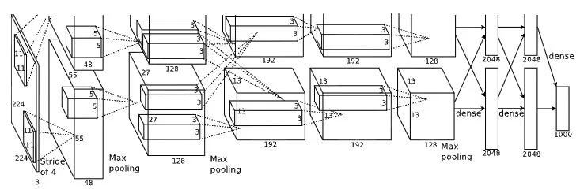
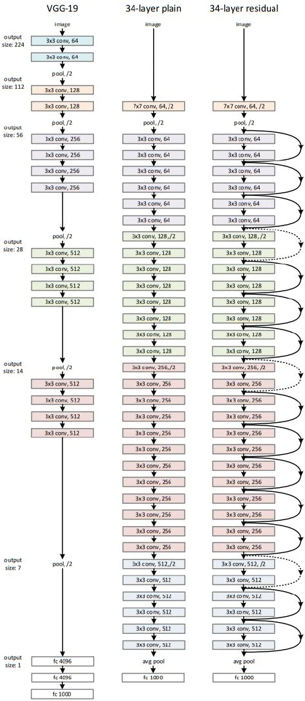
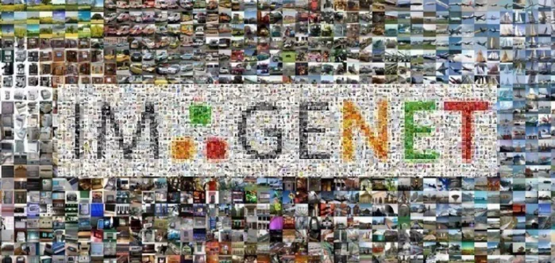
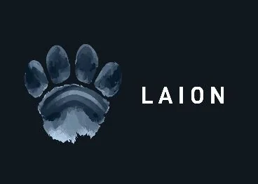
Data and computation scaling
Annotators
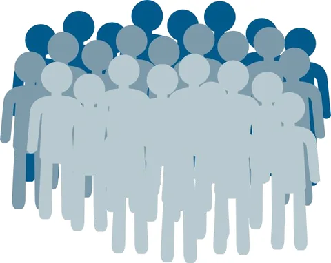
Labeling
Dataset
Training
ML Model
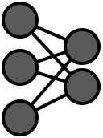
ML Engineer/ Researcher
What knowledge to extract from humans? – Data
How to teach models given data? – Supervision
Efficient and reliable scaling
Annotators
Labeling
Dataset
Training
ML Model
ML Engineer/ Researcher
Data Augmentation 😃
CutMix (ICCV’19)
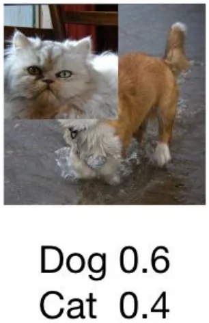
Hmix & Gmix (NeurIPS’22)
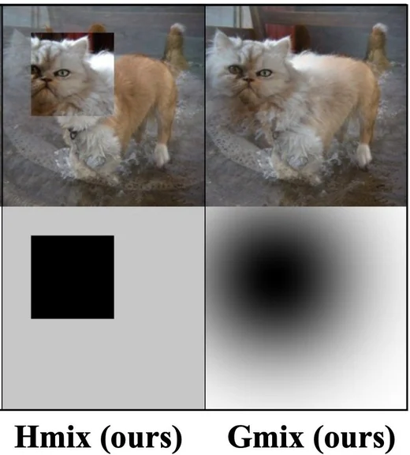
Yun et al., “CutMix: Regularization Strategy to Train Strong Classifiers with Localizable Features”, ICCV 2019 Oral. Park*, Yun*, and Chun, “A Unified Analysis of Mixed Sample Data Augmentation: A Loss Function Perspective”, NeurIPS 2022.
Efficient and reliable scaling
Annotators
Labeling
Dataset
Training
ML Model
ML Engineer/ Researcher
Data Augmentation 😃
CMO (CVPR’22)
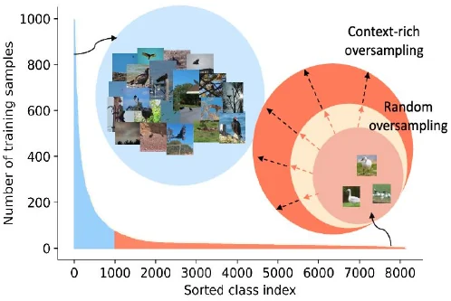
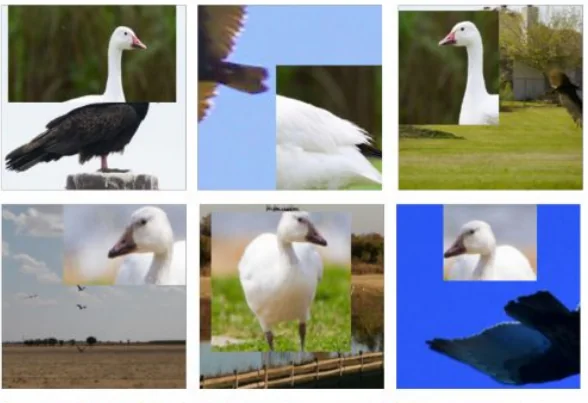
Seulki Park, Youngkyu Hong, Byeongho Heo, Sangdoo Yun, Jin Young Choi, “The Majority Can Help The Minority: Context-rich Minority Oversampling for Long-tailed Classification”, CVPR 2022.
Efficient and reliable scaling
Annotators
Labeling
Dataset
Training
ML Model
ML Engineer/ Researcher
Refining Training dataset 😃
ReLabel (CVPR’21)
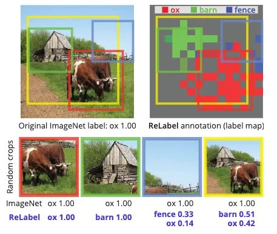
Yun et al., “Re-labeling ImageNet: from Single to Multi-Labels, from Global to Localized Labels”, CVPR 2021.
Efficient and reliable scaling
Annotators
Labeling
Dataset
Training
ML Model
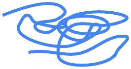
ML Engineer/ Researcher
Let’s use annotation byproducts 😃
LUAB (ICCV’23)
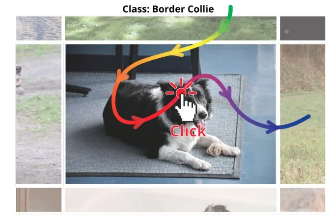
Han et al., “Neglected Free Lunch – Learning Image Classifiers Using Annotation Byproducts”, ICCV 2023.
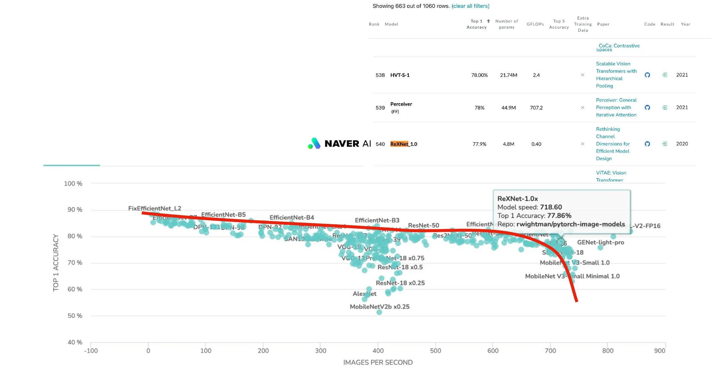
Efficient and reliable scaling
Han et al., “Rethinking channel dimensions for efficient model design”, CVPR 2021.